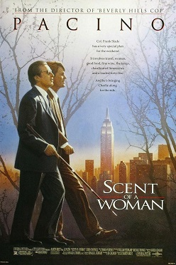
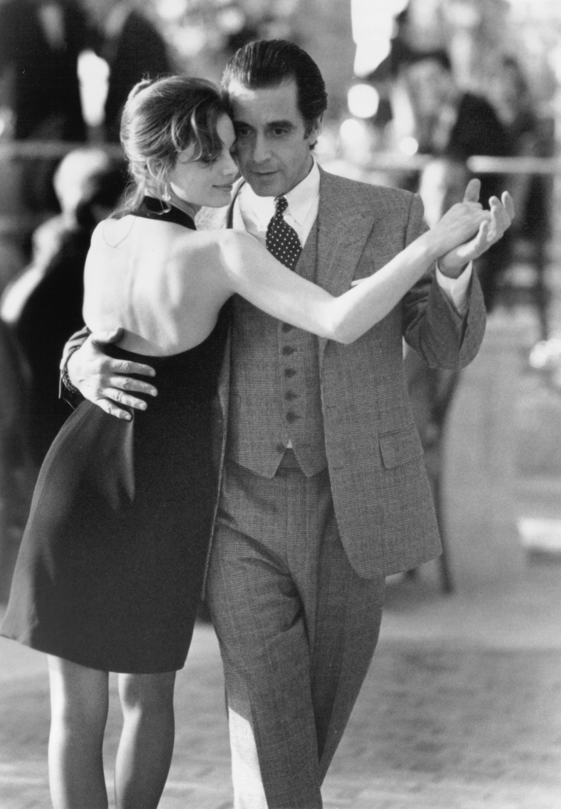
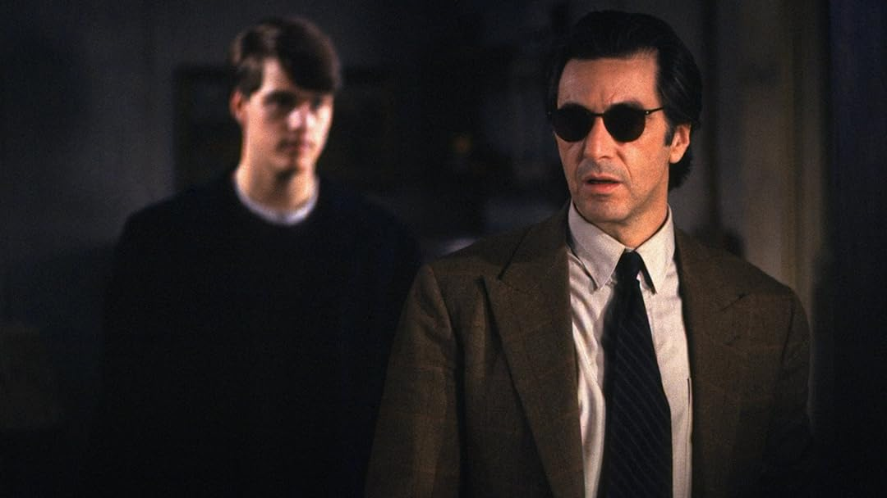

Scent of a Woman
במאי: מרטין ברסט
ז'אנר: דרמה
דעתי:
"סרט חזק שגורם לך לחשוב על הערכים האמיתיים בחיים.
אני חושב שכולם צריכים לראות את הסרט הזה לפחות פעם אחת".
Scent of a Woman הוא סרט דרמה אמריקאי משנת 1992 שהופק וביים מרטין ברסט המספר את סיפורו של תלמיד מכינה שלוקח עבודה כעוזר של סגן אלוף עצבנ י, עיוור, בדימוס רפואי. הסרט הוא גרסה מחודשת לסרטו האיטלקי של דינו ריסי משנת 1974, פרופומו די דונה, שעיבד בו גולדמן מהרומן Il buio e il miele (באיטלקית: חושך ודבש) מאת ג'ובאני ארפינו. בסרט מככבים אל פאצ'ינו וכריס אודונל, עם ג'יימס רבהורן, פיליפ סימור ה ופמן (המוכר כפיליפ ס. הופמן), גבריאל אנואר ובראדלי ויטפורד בתפקידי משנה.
הסרט צולם בעיקר ברחבי מדינת ניו יורק, וגם במיקום באוניברסיטת פרינסטון; בבית הספר אמה וילארד, בית ספר לבנות בטרויה, ני ו יורק; ובמלון Waldorf-Astoria ובבית הספר לתרבות האתית פילדסטון בניו יורק.
הסרט יצא לאקרנים ב-23 בדצמבר 1992. הוא זכה לתגובות חיוביות בדרך כלל מהמבקרים וזכה להצלחה קופתית. פאצ'ינו זכה בפרס האוסקר לשחקן הטוב ביותר על הופעתו והסרט היה מועמד לבמאי הטוב ביותר, הסרט הטוב ביותר והתסריט הטוב ביותר על בסיס חומרים ש הופקו או פורסמו בעבר. הסרט זכה בשלושה פרסי גלובוס הזהב, עבור התסריט הטוב ביותר, השחקן הטוב ביותר וסרט הקולנוע הטוב ביותר - דרמה.
עלילה
פרנק הוא סא"ל בדימוס בצבא ארה"ב. הוא עיוור ואי אפשר להסתדר איתו. צ'רלי לומד בבית הספר ומצפ ה ללכת לקולג'. כדי לעזור לשלם עבור הנסיעה הביתה לחג המולד, הוא מסכים לטפל בפרנק בחג ההודיה. אחייניתו של פרנק אומרת שזה יהיה כסף קל, אבל היא לא חשבה שפרנק יבלה את חג ההודיה שלו בניו יורק.
סצנות מהסרט - ספוילרים!
- 
- 